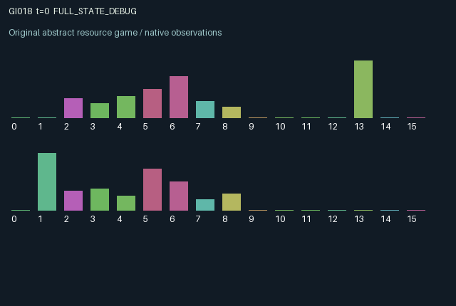

GI018 / LEGACY_ARRAY
astra-d2-00018: cohort commons with ecological hysteresis
2 agents5 actions16 observation columns32 original horizonRuntime: PASS
Release verification episode
Untrained uniform legal actions. Actual JAX state sampled along the full original episode; full-state debug camera. No human performance or learning claim.

Run this game
crucibles play --game 18
Start Python locally, then open the address printed by the terminal. Installation, multiplayer, takeover and keyboard controls →
Objective, rewards & ending
Exact task contract
{
"objective": "Accumulate original per-agent rewards under the interaction rules in mechanism.md.",
"natural_termination": "No early terminal; original t >= 32 horizon.",
"exact_transition_and_reward_source": "def raw_step(self, key, state, actions):\n locations = jax.nn.one_hot(state[\"position\"], 2, dtype=jnp.float32)\n harvesting = actions == 1\n demand_by_patch = jnp.sum(locations * harvesting[:, None].astype(jnp.float32), axis=0)\n available = jnp.take(state[\"mature\"], state[\"position\"])\n local_demand = jnp.take(demand_by_patch, state[\"position\"])\n harvest = jnp.where(harvesting, jnp.minimum(0.22, available / jnp.maximum(local_demand, 1.0)), 0.0)\n harvested = jnp.sum(locations * harvest[:, None], axis=0)\n reserve_available = jnp.minimum(state[\"reserve\"] + 0.35 * harvest, 1.0)\n sowing = jnp.where(actions == 2, jnp.minimum(reserve_available, 0.14), 0.0)\n cleaning = jnp.where(actions == 3, jnp.minimum(reserve_available, 0.10), 0.0)\n moving = (actions == 4) & (reserve_available >= 0.03)\n seeds = jnp.sum(locations * (2.0 * sowing)[:, None], axis=0)\n cleanup = jnp.sum(locations * cleaning[:, None], axis=0)\n growth_factor = jnp.where(state[\"damaged\"], 0.25, 1.0)\n maturation = state[\"old\"] * state[\"water\"] * growth_factor\n toxin = jnp.clip(0.97 * state[\"toxin\"] + 0.60 * harvested - 0.90 * cleanup, 0.0, 1.0)\n damaged = jnp.where(toxin > 0.65, True, jnp.where(toxin < 0.25, False, state[\"damaged\"]))\n water = jnp.clip(\n state[\"water\"]\n + 0.06\n - 0.50 * maturation\n - 0.08 * harvested\n + 0.05 * (jnp.roll(state[\"water\"], 1) - state[\"water\"]),\n 0.0,\n 1.0,\n )\n next_state = {\n \"t\": state[\"t\"] + jnp.array(1, dtype=jnp.int32),\n \"position\": jnp.where(moving, 1 - state[\"position\"], state[\"position\"]).astype(jnp.int32),\n \"reserve\": jnp.clip(\n reserve_available - sowing - cleaning - 0.03 * moving + 0.025 * (actions == 0),\n 0.0,\n 1.0,\n ),\n \"mature\": jnp.clip(state[\"mature\"] - harvested + maturation, 0.0, 1.0),\n \"water\": water,\n \"toxin\": toxin,\n \"young\": seeds,\n \"old\": state[\"young\"],\n \"damaged\": damaged,\n \"last_yield\": harvest,\n }\n damage_here = jnp.take(state[\"damaged\"], state[\"position\"]).astype(jnp.float32)\n rewards = (\n 0.70 * harvest / 0.22\n - 0.15 * (sowing / 0.14 + cleaning / 0.10)\n - 0.03 * moving.astype(jnp.float32)\n - 0.08 * damage_here * harvesting.astype(jnp.float32)\n )\n rewards = jnp.clip(rewards, -1.0, 1.0).astype(jnp.float32)\n done_all = next_state[\"t\"] >= 32\n dones = jnp.broadcast_to(done_all, (2,))\n info = {\"done_all\": done_all, \"legal_mask\": self.legal_actions(next_state)}\n return self.observe(next_state), next_state, rewards, dones, info"
}Declared per-step reward bounds: -1.0 to 1.0. Observability: source_defined.
Rules
Original mechanism document (historical status wording retained)
# astra-d2-00018: cohort commons with ecological hysteresis This parentless source is inspired by generic renewable commons, competing harvesters and delayed ecological conversion. It does not use a supplied benchmark or parent source. The combination is a causal proposal, not a claim of nonisomorphism, mechanism qualification or ecological realism. Two agents occupy one of two patches. Each patch has a mature stock, water, toxin, two age cohorts of planted material and a persistent damage regime. Each agent has a private reserve. Harvesting at a patch shares its available stock equally among simultaneous harvesters, each capped at 0.22. This immediate competition also increases local toxin, which influences the future regime. Actions are 0 rest, 1 harvest the current patch, 2 spend up to 0.14 reserve to plant twice that amount, 3 spend up to 0.10 reserve to remove toxin, and 4 spend 0.03 reserve to move to the other patch. Movement is ineffective if that cost cannot be paid. Rest restores 0.025 reserve; harvesting restores 0.35 times the yield. All action effects except movement use the previous location, and every action remains legal even when its special effect is resource limited. New seeds enter the young cohort after the planting transition, become old after another transition, and mature from the old cohort on a later transition. The amount converted is old_cohort * previous_water times 0.25 in a damaged patch or 1.0 otherwise. The old cohort is consumed even when conditions yield little usable stock. Mature stock is capped at one, so excess is discarded. This is a delayed conversion process rather than an immediate planting reward. Toxin retains 0.97 of its previous level, gains 0.60 times total harvest and loses 0.90 times cleanup. A patch becomes damaged above 0.65 toxin but only recovers below 0.25; between these levels it retains its existing regime. The new regime affects subsequent maturation. Water replenishes by 0.06, loses 0.50 times maturation and 0.08 times harvest, and exchanges 0.05 times the water difference with the other patch. Stocks, water, toxin and reserves are bounded to [0, 1]. Reward is 0.70 * harvest/0.22, minus 0.15 times the sum of normalized planting and cleaning expenditure, minus 0.03 for a successful move, minus 0.08 for attempting harvest in a previously damaged patch. It is explicitly clipped to [-1, 1]. Reserve flows and utility costs are distinct. Agents can benefit from each other's planting or cleaning, impose shared damage, exhaust a competing harvester's stock, or relocate before delayed benefits appear. Zero, negative and uncoordinated outcomes are possible. Observation columns 0 through 15 are: time/32; own patch; own reserve; local mature stock; other patch mature stock; local water; other water; local toxin; other toxin; local young cohort; local old cohort; local damaged flag; other damaged flag; partner position; own previous yield/0.22; and partner previous yield/0.22. Partner reserve and cohorts at the unoccupied other patch are not directly observed. Initial mature stock, water and toxin use only the reset key; later transitions are deterministic given actions. The intended interface is A2/O16/U5 and 32 transitions with terminal-state preservation. The author runs syntax parsing only. No compiler, runtime, duplicate, eligibility or learning assessment is claimed.
Commands
0Rest
1Harvest local patch
2Sow seeds
3Clean local toxin
4Move to other patch
Roles & abilities
agent_0 Original legacy agent; see mechanism and source
agent_1 Original legacy agent; see mechanism and source
Observation permissions
Training receives only the original observation rows. Role cameras use declared visibility; debug cameras are explicitly marked. Local benchmark records log debug exposure and role takeover history.
Exact observation layout
[
{
"slice": [
0,
16
],
"visibility": "exact original observe() below",
"source_code": "def observe(self, state):\n here = state[\"position\"]\n there = 1 - here\n obs = jnp.zeros((2, 16), dtype=jnp.float32)\n obs = obs.at[:, 0].set(state[\"t\"] / 32.0)\n obs = obs.at[:, 1].set(here.astype(jnp.float32))\n obs = obs.at[:, 2].set(state[\"reserve\"])\n obs = obs.at[:, 3].set(jnp.take(state[\"mature\"], here))\n obs = obs.at[:, 4].set(jnp.take(state[\"mature\"], there))\n obs = obs.at[:, 5].set(jnp.take(state[\"water\"], here))\n obs = obs.at[:, 6].set(jnp.take(state[\"water\"], there))\n obs = obs.at[:, 7].set(jnp.take(state[\"toxin\"], here))\n obs = obs.at[:, 8].set(jnp.take(state[\"toxin\"], there))\n obs = obs.at[:, 9].set(jnp.take(state[\"young\"], here))\n obs = obs.at[:, 10].set(jnp.take(state[\"old\"], here))\n obs = obs.at[:, 11].set(jnp.take(state[\"damaged\"], here).astype(jnp.float32))\n obs = obs.at[:, 12].set(jnp.take(state[\"damaged\"], there).astype(jnp.float32))\n obs = obs.at[:, 13].set(jnp.roll(here, 1).astype(jnp.float32))\n obs = obs.at[:, 14].set(state[\"last_yield\"] / 0.22)\n obs = obs.at[:, 15].set(jnp.roll(state[\"last_yield\"], 1) / 0.22)\n return obs"
}
]Entity visibility & attributes
[]
Actual verification & provenance
Per-game execution receipt
{
"game": "gi018",
"status": "PASS",
"verification_revision": 2,
"source_sha256": "4ca1c41ed73e33205d9b1d5709816131d1a6b33472ae28bd42dbfb8e0fd190c1",
"seed": 20261101,
"runtime": {
"jax": "0.4.38",
"numpy": "1.26.4",
"devices": [
"TFRT_CPU_0"
]
},
"dimensions": {
"num_agents": 2,
"observation_size": 16,
"num_actions": 5,
"max_steps": 32
},
"checks": {
"eager_reset": {
"status": "PASS",
"seconds": 0.6509919166564941
},
"observation_spaces_legal_masks": {
"status": "PASS",
"seconds": 0.14464211463928223
},
"eager_step": {
"status": "PASS",
"seconds": 0.6587197780609131
},
"jit_reset": {
"status": "PASS",
"seconds": 0.1928856372833252
},
"jit_step": {
"status": "PASS",
"seconds": 0.31002211570739746
},
"eager_jit_integer_parity_float_measurement": {
"status": "PASS",
"seconds": 0.0
},
"jit_vmap_reset": {
"status": "PASS",
"seconds": 0.3378276824951172
},
"jit_vmap_step": {
"status": "PASS",
"seconds": 0.3202240467071533
},
"outer_autoreset_api": {
"status": "PASS",
"seconds": 0.697106122970581
},
"full_original_horizon_episode_and_render": {
"status": "PASS",
"seconds": 0.979215145111084
}
},
"human_scores": null,
"browser_controls": "PENDING",
"failures": [],
"elapsed_seconds": 4.908703088760376,
"float_parity_max_abs": 2.9802322387695312e-08,
"numerical_parity": "UNDETERMINED_NONZERO_FLOAT_DIFFERENCE",
"raw_terminal_absorbing": "NOT_PART_OF_ORIGINAL_LEGACY_CONTRACT",
"terminal_outer_reset": "PASS",
"episode_steps": 32,
"scripted_random_returns": [
1.177714029327035,
1.8957139737904072
],
"terminal": true,
"demo_information": "FULL_STATE_DEBUG",
"demo_frames": 33,
"render_roles_checked": 2
}Chromium control verification
{
"game": "gi018",
"status": "PASS",
"human_scores": null,
"engineering": true,
"checks": [
"catalog_selected_and_real_native_reset",
"dom_queue_and_native_step",
"second_participant_ownership_and_native_joint_step",
"all_roles_individually_controllable_no_role_cap",
"explicit_debug_camera",
"release_to_pure_ai_without_reset"
],
"ui_sha256": "15b5861d23b3c42811865c954d5a988280bbfd21cf8e93754be2437a027158c5",
"seconds": 3.6272714138031006
}Original identity and file hashes
{
"id": 18,
"key": "gi018",
"title": "astra-d2-00018: cohort commons with ecological hysteresis",
"summary": "",
"tags": [],
"family": "legacy_array",
"dimensions": {
"num_agents": 2,
"observation_size": 16,
"num_actions": 5,
"max_steps": 32
},
"source_sha256": "4ca1c41ed73e33205d9b1d5709816131d1a6b33472ae28bd42dbfb8e0fd190c1",
"manifest_sha256": "e50a3ec8185a3f48255d1c3b9047143f7348486921036ae5845d21c69628a46c",
"files": [
{
"file": "candidate.py",
"sha256": "4ca1c41ed73e33205d9b1d5709816131d1a6b33472ae28bd42dbfb8e0fd190c1",
"bytes": 5019,
"origin": "work/exp_2/astra_generation/discovery_v2/initial/candidate_00018/attempt_00/candidate.py"
},
{
"file": "mechanism.md",
"sha256": "51808bca5567d369aa76e81a59494cf5958477a82db9c9239752a56edb896a4f",
"bytes": 3388,
"origin": "work/exp_2/astra_generation/discovery_v2/initial/candidate_00018/attempt_00/mechanism.md"
}
],
"original_status": "LEGACY_SOURCE",
"original_saved_replay": false,
"release_validation": "PASS",
"human_scores": null,
"browser_validation": "PASS"
}